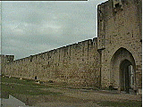
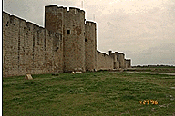
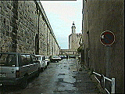
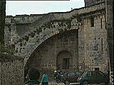
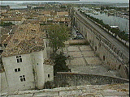
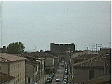

[
Aigues-Mortes
（
エーグモルト
) ]
城壁・塔(tour)・門(porte)
エーグモルトを囲む城壁は、550m×300m にも及ぶ。戦略的な計画のもとにできているため、門や櫓も軍事的な役割のものばかりである。

ガリオン船忍び口
(porterne des Gallions)

ガリオン船忍び口東南の海軍門
(porte de la Marine)

城壁（左）の内側。
中央はコンスタンス塔。

櫓や門にのぼる階段

ブルゴーニュ人の櫓から見る城壁
右手は運河

王妃門(porte de la reine)
エーグモルト市街図
| コンスタンス塔(tour de Constance) |
レストランLa Goulue |
これは何でしょう？ |